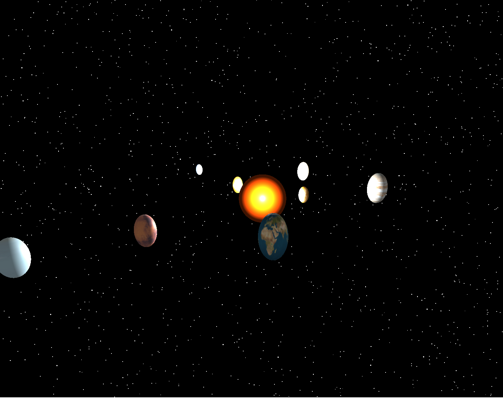
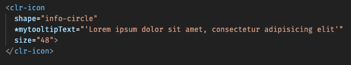
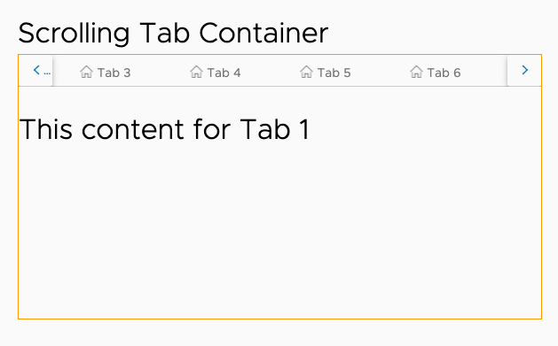
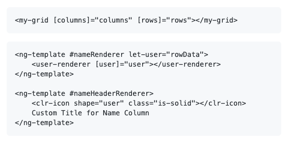
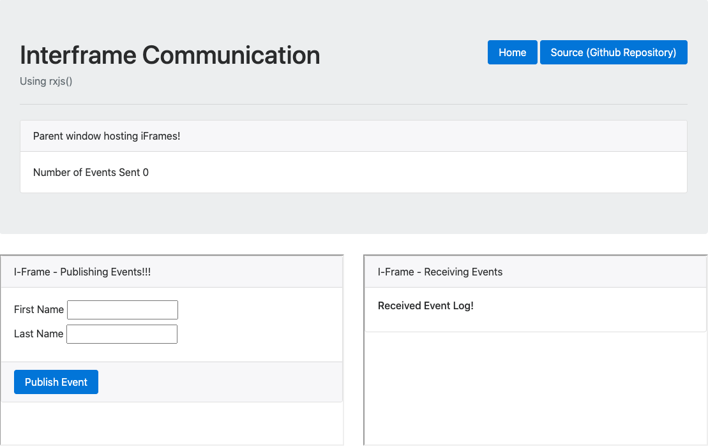
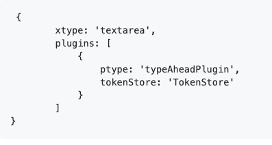

ngx-mousetrap
AngularA convenient Angular wrapper over the mousetrap library to hide complexity and expose Angular Directives and Services.
View on npm →UI Architect
UI Architect with 25 years of experience in design, development, and maintenance of enterprise web applications using TypeScript, JavaScript, HTML, CSS, Angular, RxJS, Redux, NgRx, Java, REST, ExtJS, ES5/6, Spring, JPA, and MySQL.
14+ years of full-stack experience in architecting and developing scalable and testable solutions under aggressive timelines.
UI Architect with 25 years of experience in design, development, and maintenance of enterprise web applications using TypeScript, JavaScript, HTML, CSS, Angular, RxJS, Redux, NgRx, Java, REST, ExtJS, ES5/6, Spring, JPA, and MySQL.
14+ years of full-stack experience in architecting and developing scalable and testable solutions under aggressive timelines.
Education and professional experience.
University of Jammu, Jammu & Kashmir, India
Master of Computer Applications from University of Jammu. Gold Medalist of batch 1998-2001.
University of Jammu, Jammu & Kashmir, India
VMware · Palo Alto, California
UI Architect and Lead Engineer for NSX Intelligence.
UI Architect and Lead developer for NSX-T on VMC (VMware on Cloud).
Lead developer for NSX Firewall UI.
NSX 6.4.1 HTML5 UINexant Inc · Foster City, California
UI Architect and Lead Engineer for DSM Central iEnergy Solutions.
Infosys Ltd · Chandigarh, India
Senior Technical Manager for Finacle Banking Solution (Edgeverve).
Quark Software Inc · Chandigarh, India
Senior Software Engineer in Quark Publication Manager.
Aithent Inc · Gurugram, India
Senior Software Engineer involved in development and implementation of SBS (State Based System).
Selected libraries published on npm.
A convenient Angular wrapper over the mousetrap library to hide complexity and expose Angular Directives and Services.
View on npm →Production exception stack traces are often non-readable as source maps are not bundled with the app. This library can translate a production stack to a meaningful stack using offline or hidden source maps.
View on npm →An RxJS library to communicate with WebWorkers using Observables and hide all the complexities of dealing with worker postMessaging.
View on npm →Writing on Angular, RxJS, and UI development.
An article about implementing multiple undo functionality in UI. Using metaReducers to maintain a stack of previous NgRx states to enable multiple state undos.
Read on Medium →An article about communication with web workers using RxJS. A conventional way of communicating with web workers is using postMessage, which is difficult to manage. This article explains how to expose a worker as an RxJS Subject.
Read on Medium →How to handle and implement keyboard shortcuts and hotkeys in Angular. This article explains how to angularize the popular library "mousetrap" and hide the complexity of event binding under Angular Directives.
Read on Medium →Selected projects across Angular, RxJS, React, and ExtJS.








